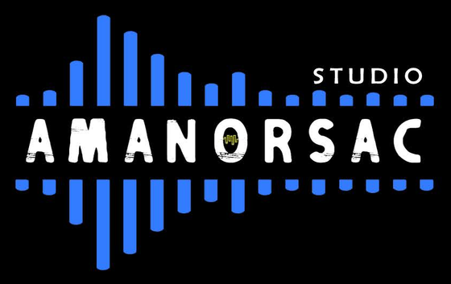

Drag to move · turn knobs on the pedal · tap for all controls
Drop here to remove
Presets
Looper
Idle
—
Output
LimiterIN
—
OUT
—
—
Stems
Tap to mute · S to solo · drag for level
Separate the song into stems to mute the original part.
Fretboard
Import a song or a video
MP3, WAV, M4A, FLAC, MP4, MOV. Low End finds the chords, the key and the beat.
Listening…
Song
Tap the waveform to place the playheadTake
Mix
Tap a part to take it in or out · drag for levelNo song loaded
Select a song imported in Learn. A separated song plays as stems; each stem can be muted.
Preparing the song
Audio
Audio deviceGeneric driver: it may not reach the interface. Press Lowest safe latency, or select the interface’s own driver.
Input device
Instrument input
Output
Sample rate
Buffer size
Smaller buffers lower the latency and raise the load. If dropouts occur, select the next size up.
If the instrument is heard twice (dry and processed), turn off direct monitoring on the interface.
Noise
Noise floor
Measured while nothing is played—
Measured while nothing is played—
Auto gate
The gate threshold follows the noise floor
The gate threshold follows the noise floor
Hum filter
Narrow cuts at the mains frequency and its harmonics
Narrow cuts at the mains frequency and its harmonics
Round trip
—ms
Processing load—
Dropouts this session—
Input check · play hardCLIP
—
Click
Global. Scene changes do not affect it.Send to
Output pair
Time signature
Loop length
Subdivide
Accent the one
Level
−6 dB
Sound
Footswitches
MIDI CC number sent by the controllerMIDI mappings
Hold any knob, then MIDI Learn · an expression pedal can drive any knobTuner
Reference pitch (A4)
440 Hz
Mute the output while tuning
TuningStandard E · E A D G B E
Library & backup
Data folderDocuments\Amanorsac Studio\Low End
A backup is one zip file of presets, sets, loops and IRs. Imported songs stay in Low End. Separated stems are not included; they are rebuilt from the song.

Low End
Bass amp, pedalboard, looper and music tutor.
No licence key is needed for this build.
- Presets, sets and scenes
- A preset is a whole rig. A set is an ordered list of presets; each is a scene, A to F on the footswitches.
- The board
- Tap a pedal's switch to turn it on or off; tap the pedal to edit it; hold it to move or remove it. Tap the amp's name to change model.
- Knobs
- Drag up or down. Double-click to reset; hold or right-click for MIDI Learn.
- Learn
- Import a song or a video: Low End finds the chords, the key and the beat. Separate it to mute the bass and play along. A and B set a loop.
- Keyboard
- Space tap tempo · T tuner · X Bypass All · L loop · ← → scenes · 1–6 scenes A–F